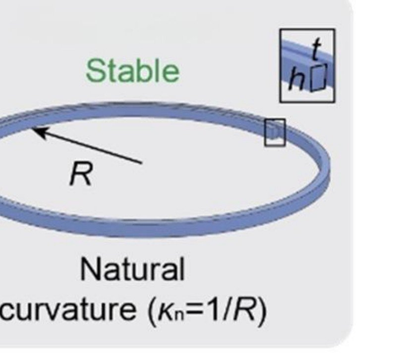
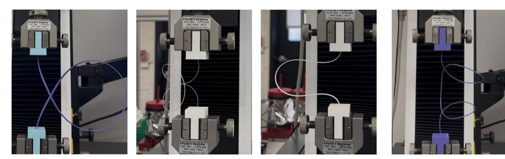
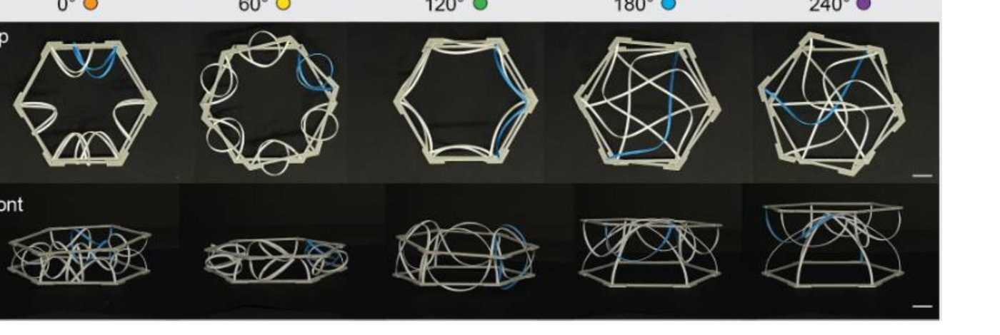
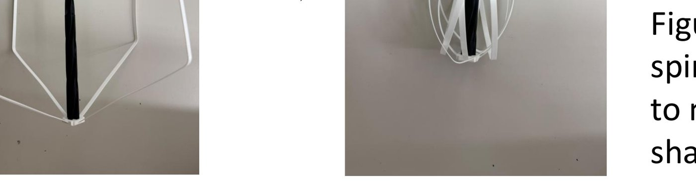

Predicting elastic rod buckling behavior to inform reconfigurable structure design.
Understand and predict a single rod's buckling behavior as a function of length, radius, height, and width. Understanding rods at this component level helps inform potential system designs and applications.
Naturally curved elastic rods are 3D-printed spirals with a parameterized radius, height, thickness, and length. The radius sets the rod's "natural curvature" (κn = 1/R). When compressed, many of these rods "snap" — undergo sudden buckling movements during both loading and unloading — and their geometry governs exactly when and how that snap-through instability occurs (Lu, Leanza, Dai, Hutchinson & Zhao, PNAS, 2024).
I modeled, 3D printed, and tested over 100 different rod configurations with varying cross-section dimensions, lengths, and radii, presenting this work through Stanford's SURI program.

Little was known about naturally curved elastic rods at a quantitative level, so I tested 50 semi-random 3D-printed PLA samples with varying radii, lengths, heights, and thicknesses — PLA offered enough elasticity for the objective with an added ease of fabrication. Each rod was cyclically compressed six times in an Instron tensile tester, with the first and sixth cycles recorded on video, generating a force-vs-displacement graph for each sample to identify buckling behavior, plastic deformation, and snapping.
Individual rods buckled in one of four primary cases: in-plane buckling at the start with slow out-of-plane buckling and snapping by the end (Case 1); the same, but with sudden snapping (Case 2); in-plane buckling throughout (Case 3); or out-of-plane buckling throughout (Case 4). Of the first 50 samples, 27 were Case 3, 10 were Case 4, and only 14 showed any snapping behavior at all — so a second testing phase intentionally targeted samples more likely to snap, to balance the dataset across all four cases. That phase showed that lengthening a Case 3 rod could shift it into Case 2, inducing snapping. Rods with a large length and small radius tended to buckle in unusual, multi-loop patterns that fell outside the four main cases, and some samples snapped during unloading as well as loading, buckling around themselves and uncoiling with a snap.

This component-level data informed multistable systems built from the same rods. A 12-rod system with four clamped, radius-varying rod sets reaches four distinct stable states as individual rods snap between them. A hexagonal system built from six identical rods reaches five stable states across a full rotation, visibly reconfiguring its shape at each 60° increment. The same principles fed into a reconfigurable spinning robot that folds its rods inward to switch between an expanded and a more condensed shape.


Our data points helped develop software for predicting buckling behavior, specifically singling out snap-through behavior, and directly informed the 12-rod and hexagonal multistable systems and the reconfigurable spinning robot shown above.
Reducing measurement uncertainty in testing — samples can respond to tenths-of-a-newton force disturbances — and further defining the unusual, multi-loop buckling cases that fell outside the four main categories. More broadly, applying this data to new reconfigurable structures and robotics.